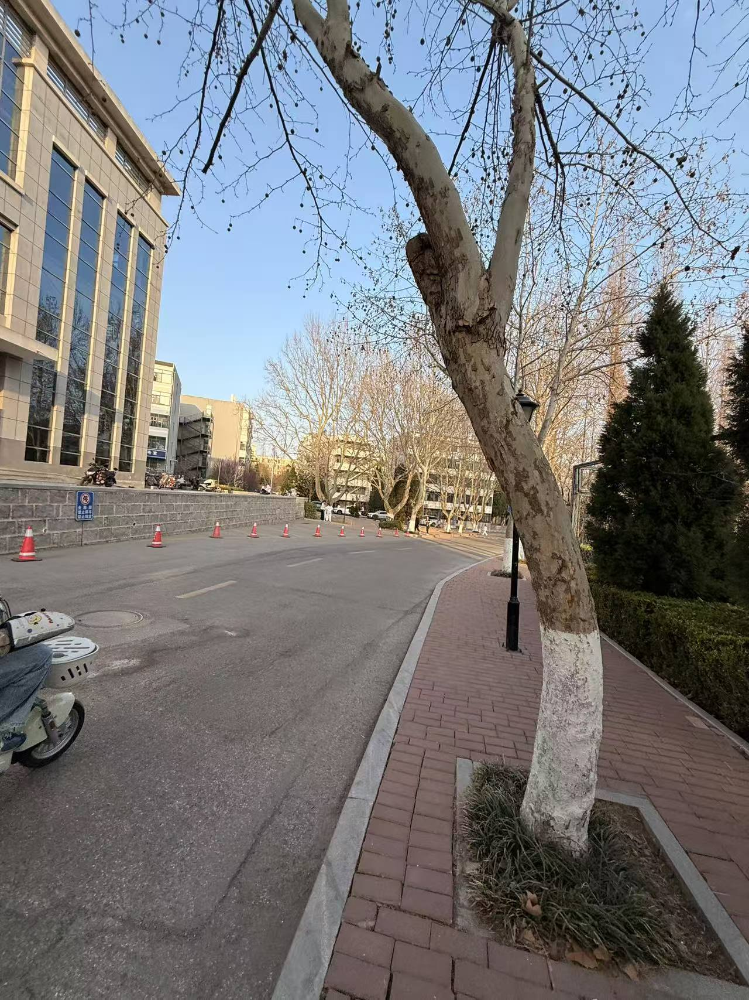
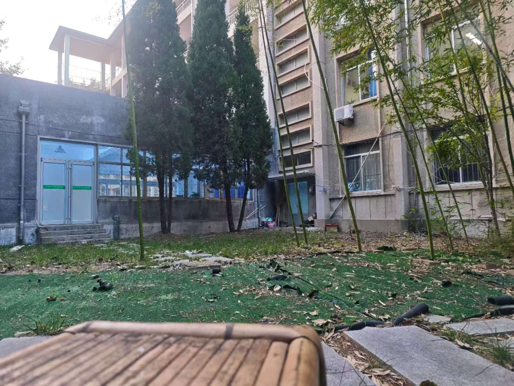
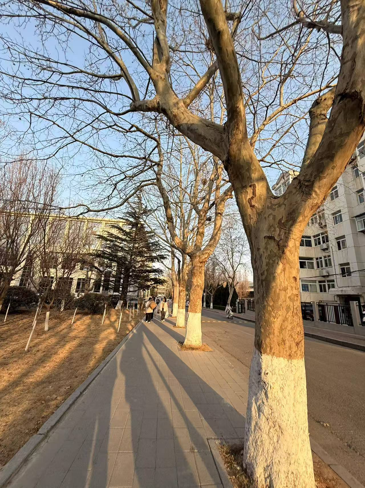
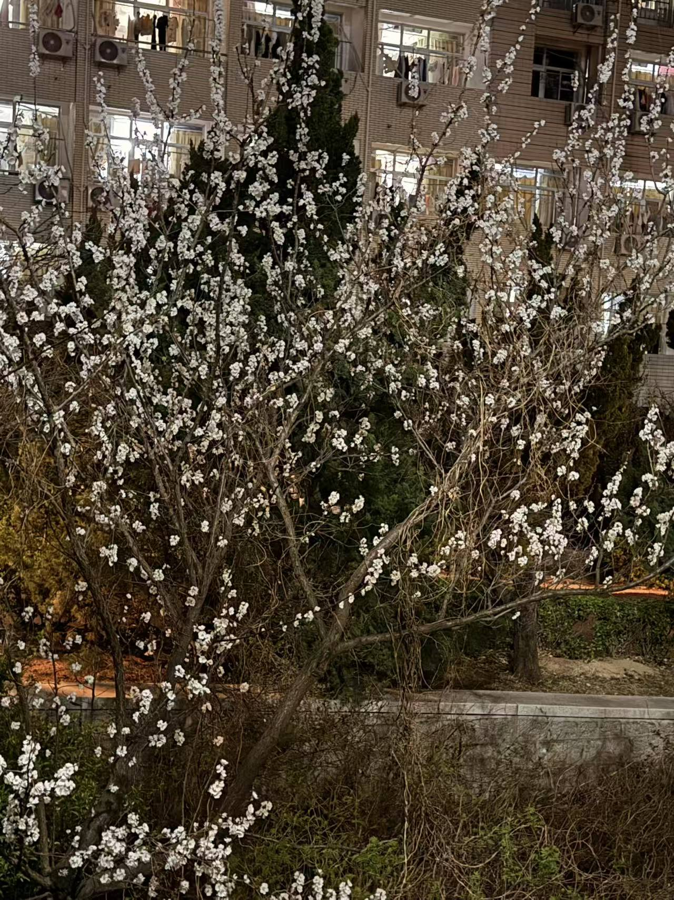
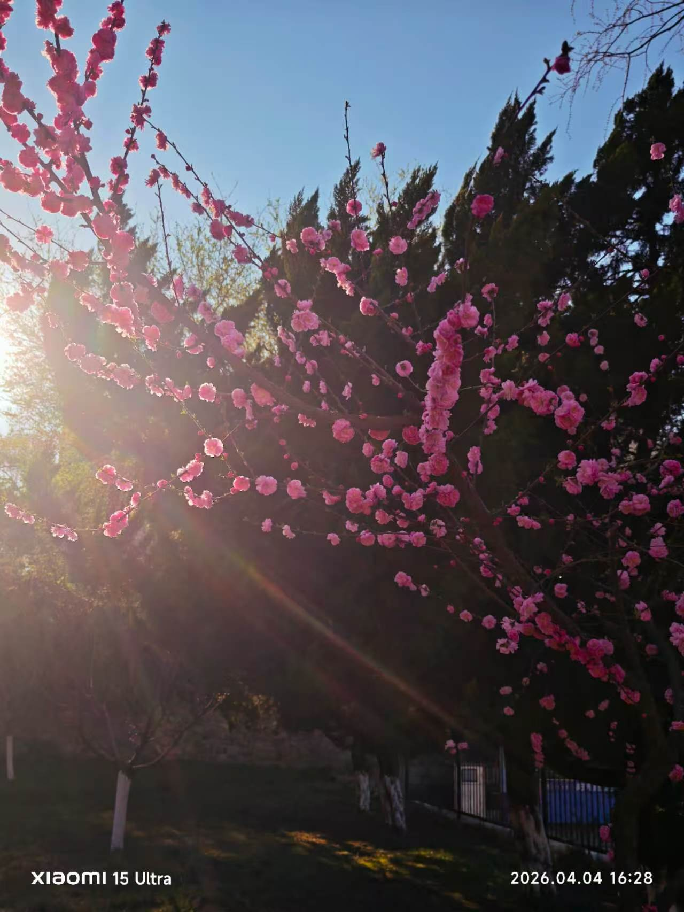

暮色是从西边漫过来的。先是天空变成浅浅的杏子黄，像一杯温过的、澄净的蜂蜜水。那轮白日里看得分明的太阳，此刻软了，化了，成了一枚将融未融的、流着蜜的蛋黄，温和地挂在体育馆的银色穹顶边上。它不再逼视你，只将余晖酿成最醇厚的金浆，汩汩地倾倒下来。教学楼朝西的玻璃窗，一时间都成了燃烧的镜子，煌煌地反射着，每一扇里都收着一个熔金的小太阳。跑道是暗红色的，此刻镀了一层暖洋洋的毛边；篮球场上奔跑跃动的剪影，被拉得老长。空气里浮动着一种倦怠的温柔，那是青草被晒过一天后散发的暖香，是少年人归家的笑语，是光线一寸一寸抚摸过万物时，留下的、满足的叹息。白日将尽的这一刻，万物都沉浸在一种宽厚的、橙色的宁静里，仿佛所有未完成的，都可以等到明天。
若说那红是喧嚷的，图书馆后那几株梨树，便是静默的。花开得正盛，一树一树的，不是雪，雪没有那样温润的质感；也不是云，云没有那样清晰的轮廓。那是一种瓷质的、易碎的白，月光洗过一般，薄薄地敷在枝桠上，沉甸甸地，将枝条压出一个谦逊的弧度。午后无风，阳光穿过花隙，在地上筛出明明暗暗的光斑，也晃得人有些微的晕眩。空气是透明的静，静得能听见花瓣舒展时，那细微的、几乎不存在的声响。偶有穿白衫的女生抱书从树下过，身影没入花光里，一时也分不清哪是花，哪是人。这白，是喧嚣世界里一个清凉的、带着墨香的休止符，教人脚步也放轻了，呼吸也放缓了，生怕惊动了这一场大梦。
绕过教学楼灰扑扑的墙角，一团火焰便猛地烧到眼前来了。那是几树贴梗海棠，红得那样不管不顾，将整整一个冬天的瑟缩与忍耐，都化作此刻泼辣的宣言。那红是朱砂里调了曙色，泼洒在铁黑色的虬枝上，一朵朵，一簇簇，紧紧挨着，几乎要挤出汁液来。花瓣是极薄的绡，风一过，便颤巍巍地，将蜜一般的光抖落下来。花下是茸茸的新草，怯生生的绿，更衬得这红有种不容分说的权威。空气里浮着一丝极淡的、近似杏仁的苦香，混在湿润的泥土气里，是春天深处最诚恳的、带着血性的味道。看着这毫无保留的红，人心里那点淤积的暮气，仿佛也被它灼灼地照亮了，烧穿了。


